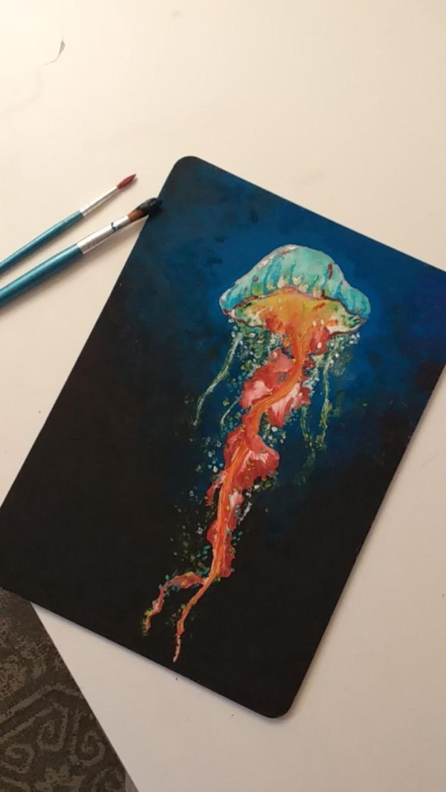
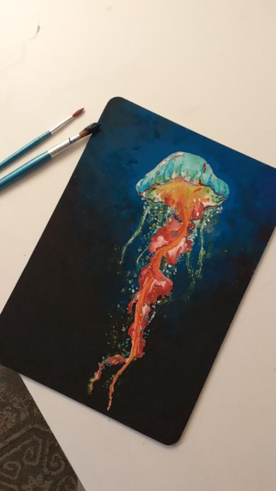

Hyvällä omalla tunnolla voin listata harrastuksiini oppimisen/opiskelun. Harrastamisen omaisesti hakeudun uusiin koulutuksiin ja nautin uuden oppimisesta. Lisää suoritetuista opinnoista löytyy täältä.
Kirjoitan paljon omia tekstejä. Runollisuutta sekä vapaamuotoista kirjoittamista.
Piirtäminen on ollut aina enemmän tai vähemmän osana kaikkea tekemistäni. Tässä muutama esimerkki töistäni:
 

Tykkään pienestä näpertelystä ja asioiden tyhjästä luomisesta.
Harrastin yleisurheilua kilparyhmässä Kankaanpään Seudun Leiskussa vuosina 2015-2021. Yleisurheilu-ura on jäänyt taakseni, mutta aktiivinen elämäntapa on säilynyt. Koiran kanssa metsässä patikointi on yksi lempiharrastuksistani.
AE7921@student.jamk.fi